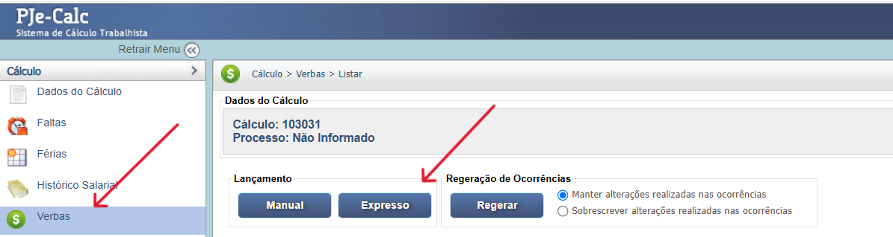
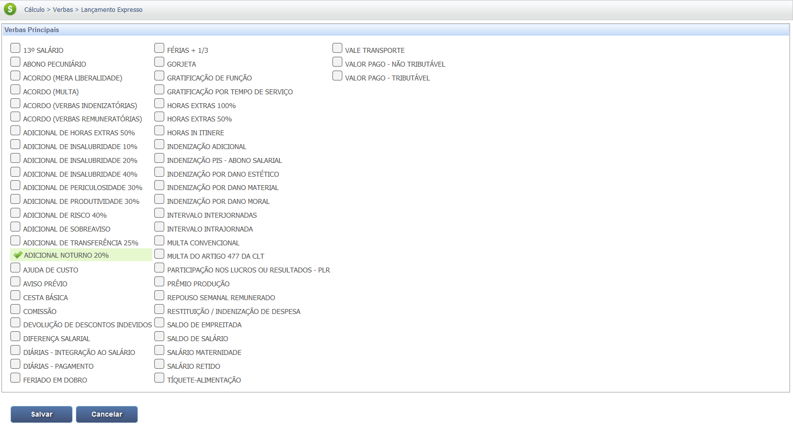
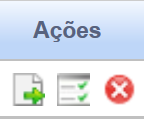
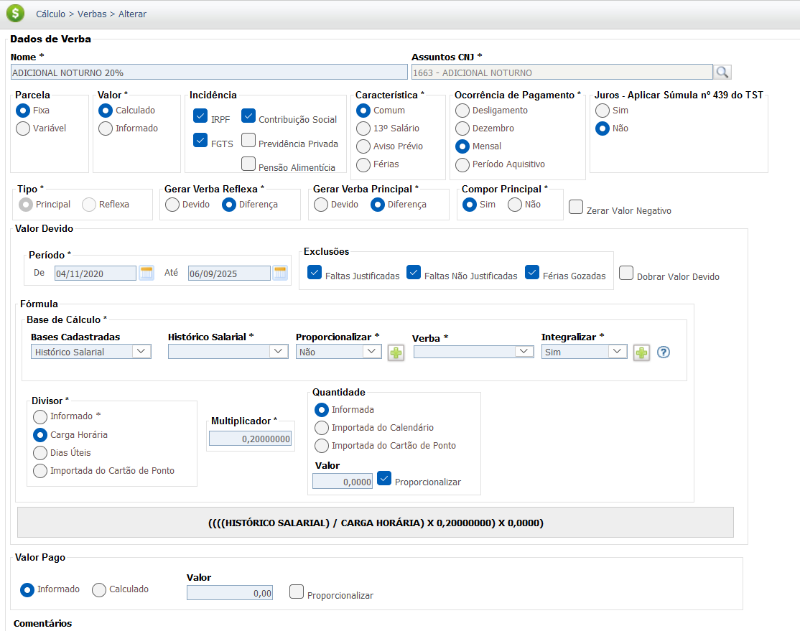
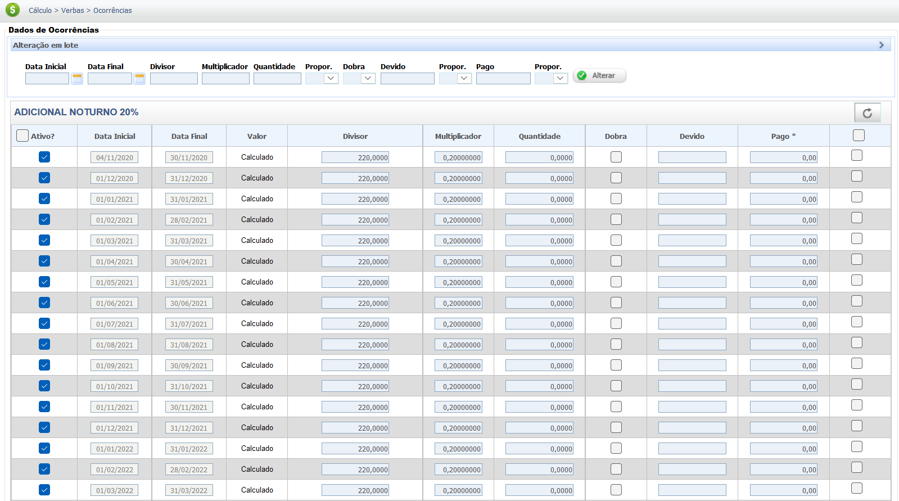

Adicional Noturno
O adicional noturno é um direito do trabalhador que visa compensar o trabalho realizado no período noturno, considerado mais desgastante à saúde. No Brasil, o horário noturno para trabalhadores urbanos é das 22h de um dia até as 5h do dia seguinte. É importante notar que essa regra difere para os trabalhadores rurais, para os quais o período noturno é definido de outra forma, dependendo da atividade (por exemplo, na lavoura, é das 21h às 5h; na pecuária, das 20h às 4h). A legislação que rege o adicional noturno está na Consolidação das Leis do Trabalho (CLT), em seu Artigo 73. Ele determina que o trabalho noturno deve ter remuneração superior à do diurno em, no mínimo, 20% sobre o valor da hora normal. Além disso, a lei estabelece a "hora noturna reduzida", que corresponde a 52 minutos e 30 segundos, uma regra que não se aplica aos trabalhadores rurais ou portuários.
Base Legal e Jurisprudência
O direito ao recebimento do Adicional Noturno tem por base a legislação e os entendimentos a seguir:
Fontes Normativas
CLT - Consolidação das Leis do Trabalho - Art. 73:
- Direito ao Adicional:
Define o adicional de no mínimo 20%, horário noturno (22h-5h) e a hora noturna reduzida (52 minutos e 30 segundos).
Jurisprudência Consolidada
Súmula nº 60 do TST
Tese (Integração e Prorrogação):
I - O adicional noturno, pago com habitualidade, integra o salário do empregado para todos os efeitos. II - Cumprida integralmente a jornada no período noturno e havendo prorrogação, esta também deve ser paga com o adicional respectivo.
Orientação Jurisprudencial (OJ) nº 97 da SDI-1 do TST
Tese (Base de Cálculo das Horas Extras):
O adicional noturno integra a base de cálculo das horas extras prestadas no período noturno.
Diferenças entre Trabalhadores (Urbanos, Rurais e Portuários)
- Trabalhador Urbano: Hora noturna de 52,5 minutos, adicional de no mínimo 20%, e horário noturno das 22h às 5h.
- Trabalhador Rural (Pecuária): Hora noturna de 60 minutos, adicional de no mínimo 25%, e horário noturno das 20h às 4h. Não há redução do horário.
- Trabalhador Rural (Agricultura): Hora noturna de 60 minutos, adicional de no mínimo 25%, e horário noturno das 21h às 5h. Não há redução do horário.
- Trabalhador Portuário: Hora noturna de 60 minutos e horário noturno das 19h às 7h do dia seguinte, conforme o art. 4º da Lei 4860/65 e a OJ n. 60 da SDI-I/TST. Não há redução do horário.
Base de Cálculo e Deduções
O cálculo do adicional é feito com base no valor do salário-hora do empregado. O valor total do adicional noturno é a soma do valor da hora normal mais o adicional de 20% sobre essa hora. A fórmula básica para calcular o valor da hora noturna é: $(salário\ mensal/jornada\ mensal)\times1.20$. O resultado é multiplicado pela quantidade de horas noturnas efetivamente trabalhadas.
Deduções da Base de Cálculo: Sobre o valor do adicional noturno incidem as deduções legais, como a contribuição para o INSS (Instituto Nacional do Seguro Social) e o Imposto de Renda (IRPF). Essas deduções são aplicadas de acordo com as tabelas progressivas vigentes e são calculadas sobre o valor total da remuneração, que inclui o salário base e o adicional.
Verbas Reflexas
O Adicional Noturno, por possuir **natureza salarial** (Art. 73 da CLT e Súmula 60 do TST), integra a remuneração para todos os efeitos legais, gerando reflexos nas verbas abaixo. É crucial notar que o adicional noturno, quando habitual, também reflete no **Repouso Semanal Remunerado (RSR) e Feriados** (OJ 394 da SDI-1 do TST).
O cálculo dos reflexos é feito pela integração do adicional ao salário-base, resultando na **remuneração completa** que serve como base de cálculo das verbas. (Ex: Salário-Base + Adicional Noturno).
| Verba Trabalhista | Reflexo do Adicional Noturno |
|---|---|
| Repouso Semanal Remunerado (RSR) e Feriados | Integra o RSR e Feriados, devendo ser calculado separadamente e pago de forma destacada (reflexo sobre a própria remuneração mensal). **Súmula 60, I, do TST.** |
| 13º Salário | Integra a base de cálculo do 13º Salário (integral e proporcional), computando-se a média do adicional pago no período. |
| Férias + 1/3 | Integra a base de cálculo das Férias (vencidas e proporcionais) e o adicional constitucional de 1/3, computando-se a média do adicional pago no período. |
| Aviso Prévio | Integra a base de remuneração para cálculo do Aviso Prévio (trabalhado ou indenizado), computando-se a média do adicional pago no período. |
| FGTS (Depósito Mensal e Multa) | Incide sobre o valor do adicional (e seus reflexos em RSR/Feriados), compondo a base de cálculo para o depósito mensal de 8% e para a Multa de 40%. |
Atenção: A Súmula 60, II, do TST determina que o adicional noturno incide, inclusive, sobre as horas diurnas que são prorrogação da jornada noturna ("hora noturna estendida").
Calculadora (Simulação)
Utilize esta ferramenta para calcular o valor do seu adicional noturno. O percentual mínimo é de 20%.
Cálculo Simples
Informe os dados para calcular o adicional.
Lançamento no PJe-Calc
A seguir, confira o passo a passo para o lançamento da verba no PJe-Calc, utilizando a opção "Expresso":
- Acessar Verbas e Escolher Lançamento: No menu de navegação à esquerda, clique na opção Verbas para iniciar o lançamento. Após o comando, será exibida a tela para escolha do Lançamento da Verba. Escolha a opção Expresso. 
- Seleção da Verba: O sistema abrirá as opções de verbas, escolha a verba Adicional Noturno 20% e clique no botão Salvar 
-
Quadro de Verbas e Ações: O sistema exibirá um quadro
com os campos:
- Ações - contendo as opções de configurações da verba selecionada (parâmetros, ocorrências e exclusão) 
- - Parâmetros da Verba
- - Ocorrências da Verba
- - Excluir
- Verba Principal - verba selecionada para lançamento.
- Verba Reflexa - em que ao clicar no botão Exibir serão listadas todas as verbas reflexas ligadas a Verba Principal.
- Parametrização da Verba: Ao clicar no botão Parâmetros da Verba serão exibidas todas as configurações necessárias para a parametrização da Verba Principal. 
- Registro de Ocorrências: Ao clicar no botão Ocorrências da Verba serão exibidas todas as configurações necessárias para registro das ocorrências da Verba Principal. 